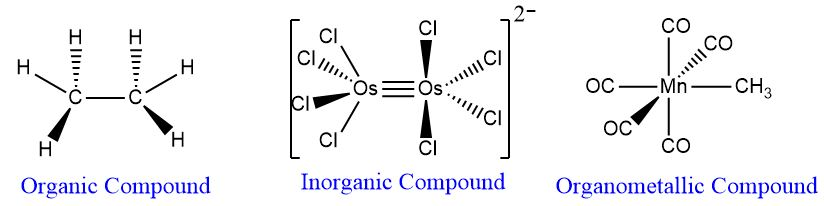
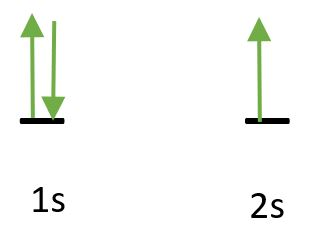
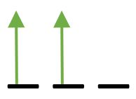
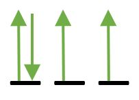
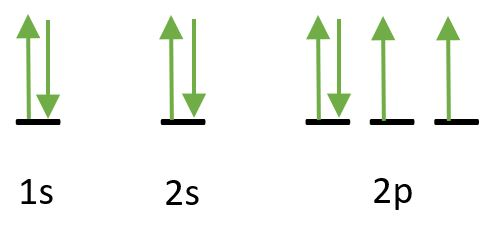
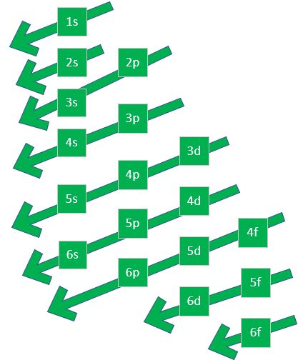
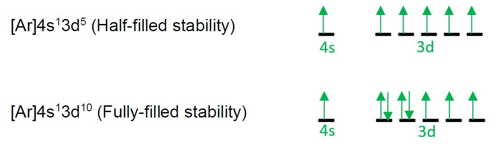
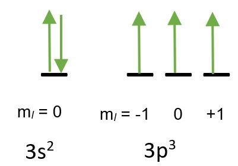
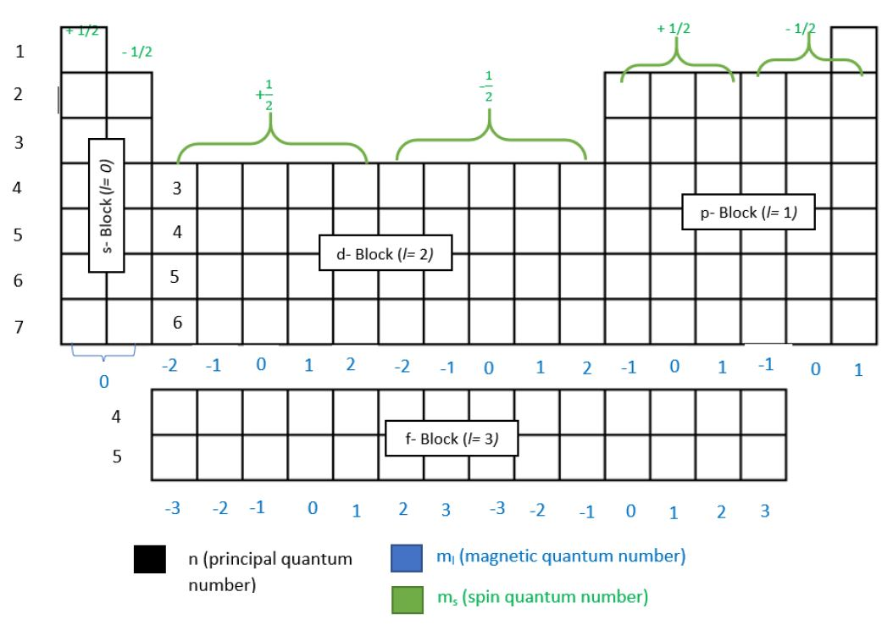

As stated from the book of Miessler et al. (2014), inorganic chemistry can be broadly described as the chemistry of everything else
except the hydrocarbon compounds and their derivatives which is more focused on the organic chemistry branch. It means that every elements in the periodic table
except carbon and hydrogen focuses on inorganic chemistry. The large fields of chemistry such as bioinorganic chemistry, organometallic chemistry, and environmental
chemistry is included under the inorganic chemistry. Other aspects that were thoroughly discussed on general chemistry is also included in the field of inorganic chemistry.

Examples of the bond line structures between organic, inorganic, and organometallic compounds. Inorganic and
organometallic compounds are commonly encountered during the inorganic chemistry study.
In this course, inorganic chemistry would be focused on topics regarding electron filling, electronic configurations, periodic trends,
bonding theories, liquid and solid state chemistry. These topics are commonly encountered on general chemistry class but you can still consider
it as part of inorganic chemistry. They are essential topics to further understand more advanced topics in inorganic chemistry such as symmetries,
point group, and crystal field theories.
As discussed on general chemistry, electron is the part of an atom that surrounds the nucleus. These negatively charged particles are the ones
responsible for bonding with other atoms and chemical reactions to occur. As you can see on the periodic table of elements, the elements are not arranged
on alphabetical order. In contrast, they are arranged in terms of their properties and also how their outermost electrons called valence electrons
were identified. Understanding on how electrons are filled in the atom of an element can elaborate how elements are arranged in the periodic table of elements. At the
quantum state, elecrons tend to fill up a space called orbital. It is a mathematical function which describes the wave-like behavior of an
electron. Orbitals are designated into four types which are sharp, principle, diffuse, and fundamental or s,p,d, and f-orbital.
Combination of orbitals are found within each shells of an atom. Here are the rules of electron-filling:
Aufbau Principle
It describes the buildup of electrons in an atoms that results from
continually increasing number. It means that orbitals of lower energy are filled up first. For example, we have
lithium (atomic number Z= 3) which has an electron arrangement shown below. 1s orbital is filled up with electron first before
filling up the 2s orbital.

Pauli Exclusion Principle
Each electron in an atom has a unique ste of quantum numbers. It also signifies that electron pairs
occupying the same orbital must have opposite spins.As shown on filling up the orbitals of lithium, 1s has opposite spins indicated
by arrow pointing upward and the other half pointing downward. To understand this principle, you can consider the definition of spin quantum number.
Quantum numbers are to be discussed further on the succeeding lectures.
Hund's Rule of Multiplicity
This rule states that electrons are placed in an atomm to give the maximum number of total spins possible (it should exhibit
the maximum number of parallel spins). This principle can be observe on p-orbitals which has the capacity to carry up to six electrons
(three electron pairs). As shown below are the arrangements of electrons at p-orbital.
Number of Electrons
Arrangement
Unpaired e−
Multiplicity
1
1
2
2

2
3
3
3
4
4

2
3
5
1
2
6
0
1
Demonstration of Hund's Rule of Multiplicity at p-orbital
Hund's rule of Multiplicity was derived from a quantum mechanics calculation which it shows that
electrons tend to minimize their repulsion by occupying their own orbitals instead of sharing it with another
orbital. Relating it to the amount of energy, there is a state by which electron spins of unpaired electrons
has a lower energy than the electron spins of paired electrons. It is best explained with the concepts of
Coulombic Energy of Repulsion (IIC) and Exchange Energy (IIE).
Coulombic energy of repulsion happens when two electrons occupy the same region in space. It also implies that the greater
the number of paired electrons, the higher energy of the state. For exchange energy, it depends on the number of possible exchanges
or permutations of electrons possible. The greater the number of such parallel spins, the lower the energy of
state.
In determining the arrangement on which orbitals and energy levels does an electron should fit, a notation was established which
is called electronic configuration. This follows on how quantum numbers are designated to each electron shells.
Basically, the notation starts with the number which represents the energy level of the electron followed by the shape of the orbital (can be s,p,d or f)
and finally raised to the number of electrons occupied in that orbital. Let's take an example for an oxygen atom which have the atomic orbital diagram
as follows:

In the term 1s, 1 stands for the first energy level and s refers to the s-orbital of the electron. In this orbital, there are two electrons at opposite spin following
the Pauli exclusion principle. Thus, the first term for the electronic configuration is 1s2. Same goes through with the 2s orbital by which all Electrons
are filled in the second energy level s-orbital which represents the configuration 2s2. At the last orbital that an electron of the oxygen atom can be occupied (second
energy level p-orbital), there are 4 electrons by which only one electron pairs of opposite spins are formed following Hund's Rule of Multiplicity. It is designated in the configuration as
2p4. Combining each terms derived, the electronic configuration for oxygen atom is 1s22s22p4.
As you can observe, there is no such thing as first energy level p-orbital, this is because at first energy level only s-orbital is available. If you can see the periodic table of elements, the elements were arranged at increasing
electronic configurations because the number of electrons at an atom also increases. To further understand how electronic configurations are arranged with respect to the energy levels
and shape of the orbitals. A mnemonic was used to determine the arrangement of orbitals in designating the electronic configuration of an element.
The sequence of the mnemonic is just by following the arrow from top up to the bottom as shown below. From the example of oxygen atom, it is correct that after
1s and 2s orbital, it is followed by the 2p orbital as the next orbital.

Arrangement of Electronic Configurations (starts from top up to the bottom). This diagram
is also known as the Aufbau diagram.
In some cases, the electronic configurations are too long to be designated just like the elements that has
greater than 18 atomic number (Z > 18). To make it simplified, it is acceptable to designate some parts of
the electronic configuration with the use of noble gases. Noble gas configuration is used
when the electronic configuration to write. For example, we have calcium atom. Calcium has 20 electrons, following the
mnemonic, the electronic configuration is 1s22s22p63s23p64s2
and you can simplify the configuration to the nearest noble gas in the arrangement which is argon (Z = 18). The simplified
electronic configuration by using noble gas for calcium atom is [Ar]4s2. Additional term that can be encountered
in electronic configuration is isoelectronic. Isoelectronic are group or pair of elements or ions that have the same electronic
configurations. Example of this is the electronic configuration between S−2 ion and Ar.
Exceptions in the Electronic Configuration
In electronic configuration, you can also visualize the stability of the elements
depending on its valence electrons because they are the ones responsible for chemical bondings and
reactions. However, there are two elements in the periodic table that have special case in terms of its
stability at the valence electrons and defies the rules in designating the electronic configurations. The two elements
are chromium which has an electronic configuration of [Ar]4s13d5 to favor half-filled stability
and copper which has an electronic configuration of [Ar]4s13d10 to favor
fully-filled stability.

Electronic configuration of chromium (half-filled stability) and copper atom (fully-filled stability). You can
observe that 4s valence electron is not fully filled and intentionally put the single electron into the 3d subshell. This is more favorable
arrangement of electron by those two atoms for them to become more stable.
A set of numerical values was used to describe the location of the electron in the subshells and orbitals. These are known as
quantum numbers that represents the coordinates of the electrons and composed of four numerical values. The four
quantum numbers are principal quantum number (n), angular momentum quantum number (l), magnetic quantum number (ml),
and spin quantum number (ms). Each of these numbers represents important properties on the electron.
Principal Quantum Number (n)- represents the energy level of the electron. It also describes the
distance of the electron from the nucleus. Higher value of n shows a higher energy which is designated by an integer (n= 1,2,3,...)
Angular Momentum Quantum Number (l)- represents the shape of the orbitals occupied by the electron. The numerical values
are s-orbital = 0, p-orbital= 1, d-orbital= 2, and f-orbital= 3.
Magnetic Quantum Number (ml)- represents the spatial orientation or degeneracy of the
electron. This number greatly depends on the l quantum number. The possible numerical values are the following:
for an s-orbital (ml=0), p-orbital (ml= − 1, 0, +1), d-orbital (ml= − 2, − 1, 0, +1, +2)
, and f-orbital (ml= − 3, − 2, − 1, 0, +1, +2, +3).
Spin Quantum Number (ms)- represents the magnetic spin of the electron by which it was assumed that electrons act like tiny magnets (Coulombic energy of repulsion).
This quantum number signifies the reason in filling up the electrons are at opposite spins (follows Pauli exclusion principle). The numerical
values of spin quantum number are +1/2 (indicates clockwise spin, single e− in a subshell) and − 1/2(indicates counterclockwise spin, paired e− in a subshell)
Now, applying the definitions of the quantum numbers, we can identify the sets for the electrons of a certain element. For example, the set of quantum numbers
for the valence electron of phosphorus atom (P). The valence electrons in P is in the 3p3 subshell. Analyzing the subshell, we can identify the first two quantum nummbers, the
energy level is 3 as shown which indicates the principal quantum number (n = 3). For the shape of the orbital, the subshell shows p-orbital which is representd by angular momentum quantum number
(l = 1). For the other two quantum numbers, you can determine it through the illustration of the atomic orbital of the valence electrons of P atom.

For the magnetic quantum number (ml), as mentioned from the definition of it, it depends on the second quantum number which is the angular momentum quantum number
that represents the shape of the orbital. At s-orbital there is only one possible value of ml which is 0. In the case of P atom which has a valence electron at the p-orbital,
there are three possible values, electron at 3p1 is ml = − 1, 3p2 is ml = 0, and 3p3 is ml = + 1.
Since we consider the 3p3 subshell, thus ml = + 1. For the spin quantum number, every electron represented by an upward arrow shows a clockwise spin while downward arrows
represents the counterclockwise spin. In the case of 3p3 subshell, clockwise spin is exhibited which has a spin quantum number of + 1/2. Overall, the set of quantum numbers of P atom at
3p3 subshell are n = 3, l= 1, ml= +1, and ms= +1/2.
Madelung Rule (n + l Rule)
If you are having trouble with understanding the mnemonic of electronic configuration (Aufbau diagram) to which orbital should be filled out with electrons first, there is an alternative way
to determine it by n + l rule. With the use of knowledge in quantum numbers, you can determine which orbital is a priority to be filled out with electron.
This technique is simple by just adding the principal quantum number and angular momentum quantum nummber, you compare the sum of the two orbitals and the least number
is the priority to be filled up first. For example, we compare 4s orbital with 3d orbital to which should be filled up first.
4s orbital
3d orbital
n
4
3
l
0
2
n + l
4
5
From the comparison, it shows that 4s orbital should be filled up first rather than 3d orbital. In summary,
n + l rule follows that the orbitals are filled in order of increasing n + l as they represents
the relative energies of the orbital. If there is a case by which the value of n + l yields the same,
you can compare it with the value of n only, such that the least number is filled up first.
Quantum Numbers and Periodic Table of Elements
As you can observe from the periodic table of elements, elements are arranged in increasing electronic configurations.
With this principle, quantum numbers of the valence electrons of each elements are also involved in the arrangement of the elements
in the periodic table. Periods (rows in the periodic table) represents the energy level of the electron (quantum number n), elements
are grouped into blocks depending on which shape of the orbital they have on their valence electrons, magnetic quantum number can
be represented per column of the periodic table of elements, and lastly spin quantum number is represented depending on the blocks formed
in the periodic table with respect to the shape of the orbital. To visualize these patterns from the periodic table of elements, the diagram below
shows the quantum numbers on each box that represents an element. In the d-block section the principal quantum number (n) should start with 3 instead of 4,
because 3d orbital is the one present in its valence electron. Outside the d-block, which is p-block on the right side, the principal quantum number should be
followed is n = 4 downwards as it represents the 4p orbital and so on.

Quantum Numbers and the Periodic Table of Elements
With this relationship between the periodic table and quantum numbers of the element's valence electrons, quantum numbers can serve as an address of the element
in the periodic table of elements. To clearly comprehend this concept, here are some sample problems. Identify the four quantum numbers that represents
the valence electrons of the following.
4s electron of Ca
3d electron of Ni
5p electron of Te
4f electron of La
The valence electron of Ca is 4s2, Ni has 3d8 valence electron, Te has
5p4 valence electron, and La has 4f1 valence electrons (identified from electronic
configurations of each element).
4s2 electron of Ca: n = 4, l= 0, ml= 0, and ms= − 1/2
3d8 electron of Ni: n = 3, l= 2, ml= 0, and ms= − 1/2
5p4 electron of Te: n = 5, l= 1, ml= − 1, and ms= − 1/2
4f1 electron of La: n = 4, l= 3, ml= − 3, and ms= + 1/2
Aside from quantum numbers, there are also patterns that associates the properties of each of the element with regards to their arrangement
in the periodic table of elements. These are called periodic trends which are valuable aspects in the arrangement of elements
within the periodic table on the basis of their electronic configurations. Major periodic trends include atomic radius, ionic radius, metallic character,
ionization energy, electron affinity, and electronegativity. These properties are essential to be determined to further understand their behavior at the extent of chemical bonding. Discussing it one by one:
Atomic Radius
Atomic radius refers to the size of the atom (nucleus and electrons are included). This property was based on the
change in the principal quantum number (n) and the change in effective nuclear charge (Zeff) of the atom.
As the nuclar charge increases, the electrons are pulled towards the center of the atom and the size of any orbital decreases.
The increasing nuclear charge and number of electrons, result in a gradual decrease in atomic size across each period.
Ionic Radius
The trend of ionic radius is similar to that atomic radius but this time when the element is in its ionic form. Cations
(ions that lost electrons) are smaller than its atomic form. In comparing two cations, a larger charge represents a smaller radius. For
example, between Na+ and Mg2+, the relationship should be Na+ > Mg2+ in terms of ionic radius.
On the other hand, anions (ions that have excess electrons) are larger than its atomic form. In comparing two anions, a larger charge represents
a larger radius. For example, between Cl− and S−2, the relationship should be Cl− < S−2
in terms of its ionic radius.
Metallic Property
Metallicity or metallic property is specific for the bonding among metal atoms. This relates to the property of metals to have high
melting and boiling points. Metals have a strong forces of attraction due to their delocalized electrons that can move freely to
interact with another nucleus. The trend of this property decreases across from left to right of the period while it increases downward.
Ionization Energy
This property is the ionization potential or energy required to remove an electron at a gaseous state which
relatively results to a cation. The reaction on how a gaseous atom is ionized is:
Atom(g) → Ion+(g) + e− such that I.E. > 0 kJ/mol
The reaction is endothermic (absorbs energy).From the effects of shielding, the ionization energies vary with different nuclei and different nummber of
electrons. The general trend across a period is an increase in ionization energy as the nuclear charge
increases.
Electron Affinity
Opposite to ionization energy, electron affinity is the energy required to add an electron at a gaseous state which
relatively results to an anion. The reaction on how electron was added:
Atom(g) + e− → Ion−(g) such that E.A.1 < 0 kJ/mol
Ion−(g) + e− → Ion−2(g) such that E.A.2 > 0 kJ/mol
In this series of reactions, the first addition of electron is exothermic (release of energy) but if there is a second reaction by which a negatively charged ion
was added with another electron, the reaction becomes endothermic (absorbs energy). The pattern of the trend in electron affinity is also the same to that
of the ionization energy.
Electronegativity
Electronegativity is a property and measurement of an atom capability to attract a bonding pairs of electrons. The value of electronegativity
is demonstrated by the Pauling scale. It describes that the change in bond energies is measured with the comparison with its measured bond energy
to the theoretical bond energy. In depth studies on electronegativity shows a range for its change in bond energies (ΔX) at different molecules. A value of
0 up to 0.4 should be observed on non-polar compounds, 0.4 to 1.9 to a polar compound, and greater than 1.9 for ionic compounds. The periodic trend for this
property is increasing across from left to right in the periods while it decreases downwards. The element that has the highest electronegativity is F (fluorine atom) with a ΔX = 4.0.
In summary of the periodic trends, the patterns can be illustrated as follows which is helpful for students to memorize.